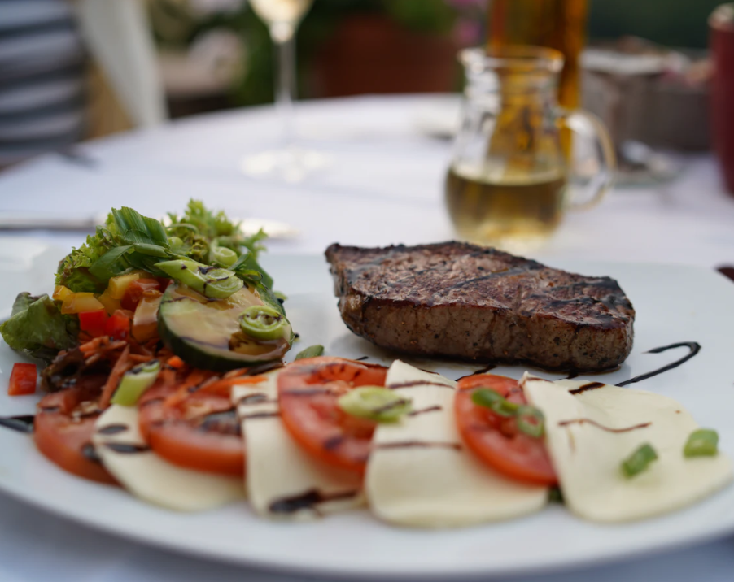
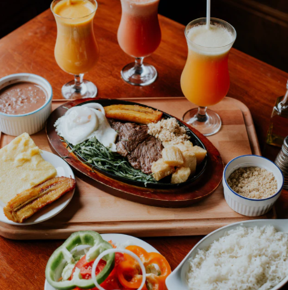

Recent Posts

OCT 15, 2017
The Best Restaurants In Canada

SEP 15, 2017
Oct 25, 2017 / Comments 11 / Casserole
We’ve all been dying to know which type of magic the Gaines would bring to the café, a landmark on Waco’s bustling traffic circle that closed down in February of 2016. The Fixer Upper stars’ Magnolia brand, which includes the Magnolia Market, a premium interior paint line, a bakery, and a quarterly home magazine, has already reshaped the culture and perception of Waco, Texas. The Elite Café, which was originally opened in 1919, has catered to Elvis Presley when he was training at Fort Hood in the 1950s, and previously served steaks, burgers, and salads. It was a landmark for locals and passersby traveling from Austin to Dallas, most recognizable by a baby-blue ’56 Cadillac parked right out front.
Sep 25, 2017 / Comments 30 / Apple , Stuffing And Dressing
We’ve all been dying to know which type of magic the Gaines would bring to the café, a landmark on Waco’s bustling traffic circle that closed down in February of 2016. The Fixer Upper stars’ Magnolia brand, which includes the Magnolia Market, a premium interior paint line, a bakery, and a quarterly home magazine, has already reshaped the culture and perception of Waco, Texas. The Elite Café, which was originally opened in 1919, has catered to Elvis Presley when he was training at Fort Hood in the 1950s, and previously served steaks, burgers, and salads. It was a landmark for locals and passersby traveling from Austin to Dallas, most recognizable by a baby-blue ’56 Cadillac parked right out front.
Sep 15, 2017 / Fall , Side Dish / Comments 6
We’ve all been dying to know which type of magic the Gaines would bring to the café, a landmark on Waco’s bustling traffic circle that closed down in February of 2016. The Fixer Upper stars’ Magnolia brand, which includes the Magnolia Market, a premium interior paint line, a bakery, and a quarterly home magazine, has already reshaped the culture and perception of Waco, Texas. The Elite Café, which was originally opened in 1919, has catered to Elvis Presley when he was training at Fort Hood in the 1950s, and previously served steaks, burgers, and salads. It was a landmark for locals and passersby traveling from Austin to Dallas, most recognizable by a baby-blue ’56 Cadillac parked right out front.
Sep 15, 2017 / Fall , Side Dish / Comments 6
We’ve all been dying to know which type of magic the Gaines would bring to the café, a landmark on Waco’s bustling traffic circle that closed down in February of 2016. The Fixer Upper stars’ Magnolia brand, which includes the Magnolia Market, a premium interior paint line, a bakery, and a quarterly home magazine, has already reshaped the culture and perception of Waco, Texas. The Elite Café, which was originally opened in 1919, has catered to Elvis Presley when he was training at Fort Hood in the 1950s, and previously served steaks, burgers, and salads. It was a landmark for locals and passersby traveling from Austin to Dallas, most recognizable by a baby-blue ’56 Cadillac parked right out front.
OCT 15, 2017
SEP 15, 2017
Mon - Thu: 5pm - 6pm
Fri - Sat: 2pm - 4pm
| ㅡ | Recipes | (34) |
| ㅡ | Cooks | (15) |
| ㅡ | Customers | (13) |
| ㅡ | Atmosphere | (9) |
| ㅡ | Upcoming Events | (11) |